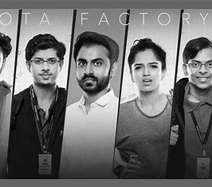
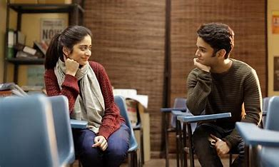

Kota Factory is an Indian Hindi-language streaming television series created by Saurabh Khanna, directed by Raghav Subbu & produced by Arunabh Kumar for The Viral Fever. The story is set in Kota, Rajasthan, an educational hub famous for its coaching centres. The show follows the life of 16-year-old Vaibhav (Mayur More) who moves to Kota from Itarsi. It shows the life of students in the city, and Vaibhav's efforts to get into an Indian Institute of Technology (IIT) by cracking the Joint Entrance Examination. It also stars Jitendra Kumar, Ahsaas Channa, Alam Khan, Ranjan Raj, Revathi Pillai and Urvi Singh in prominent roles.
If you want to see kota factory then click on below link
click me.Flames is a 2018 Indian Hindi-language coming-of-age romantic drama web series produced by The Viral Fever (TVF). It was directed by Apoorv Singh Karki and Divyanshu Malhotra, starring Ritvik Sahore and Tanya Maniktala in the lead roles. Set in a tuition center in west Delhi, the story follows the lives of two students. Its first season premiered in 2018, while the second was released on October 18, 2019. The third season was dropped in October 2022.
If you want to see Flames then click on below link
click me.The series follows Anuj and Ritu, two love-struck teenagers who meet in a coaching centre in Bhopal. Anuj is a small-town boy, and Ritu has just moved from Gurgaon. We follow the journey of the many firsts of their love; first dates, first gifts, first fights, bouts of jealousy, and possibly, their first kiss. Will their first relationship withstand the trials of love, or will they get lost in the Gutar Gu?

If you want to see Gutar Gu then click on below link
click me.